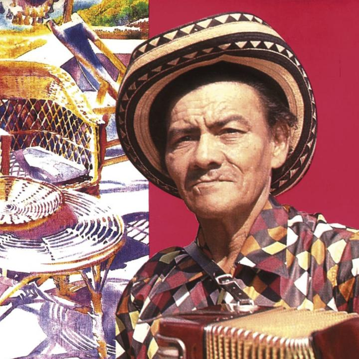
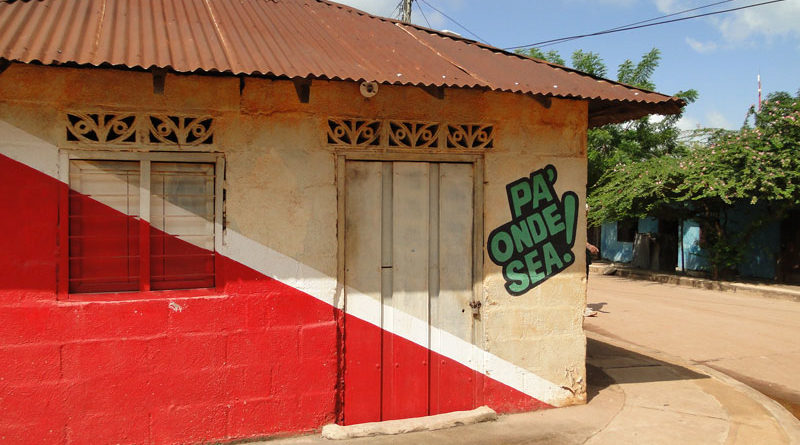
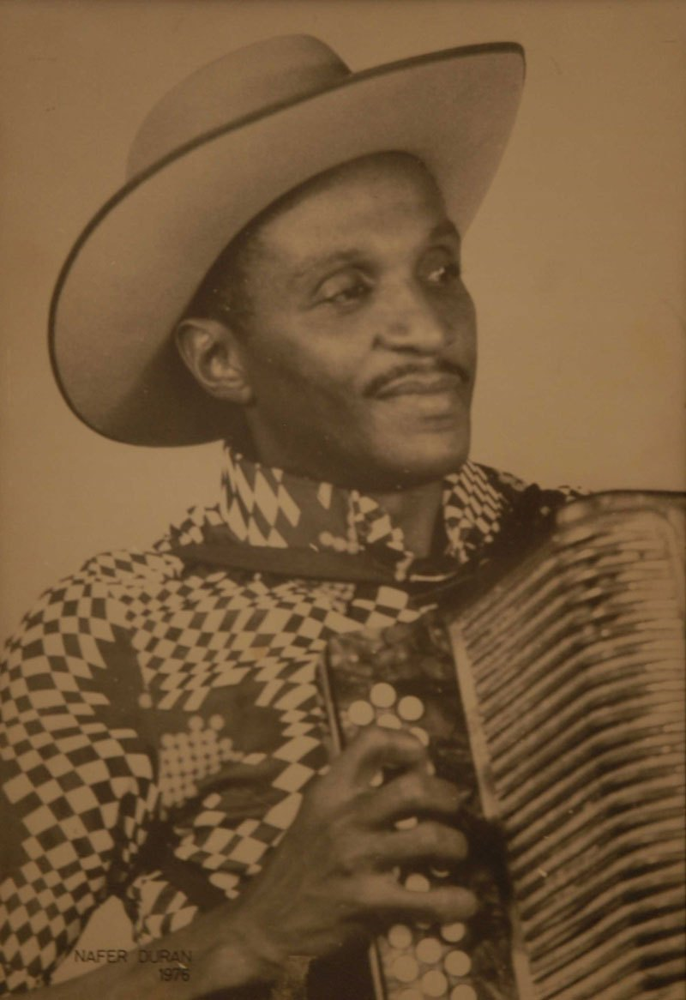

Bienvenidos al sistema de votacion virtual
INICIO
CAMPAÑA
RESULTADOS
MÁS INFO
 
Candidato
Juancho Polo Valencia
Edad
40 Años
Partido
Altos Del Rosario
Vote Altos Del Rosario

Candidato
Nafer Durán Díaz
Edad
56 Años
Partido
El Paso, Magdalena
Vote El Paso, Mag
Guardar datos
Vote Altos Del Rosario